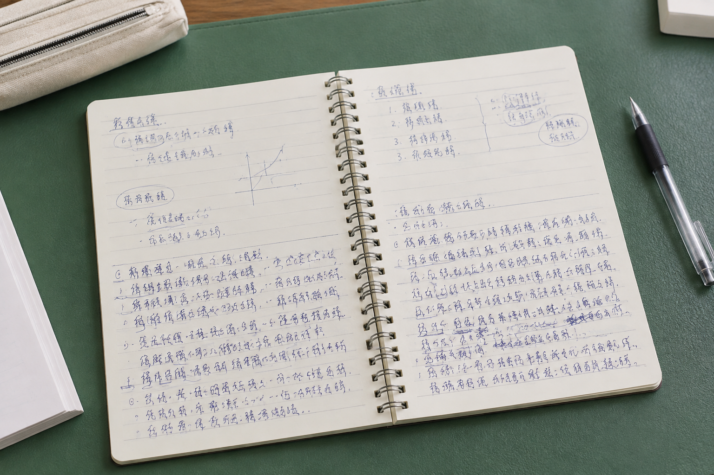

武汉手写记录页尾突然挤了几行，是笔迹变化还是空间不够
一页笔记越写越密，有时只是为了把最后几句话留在同一页。看局部之前，先看看整张纸还剩多少位置。

页尾有自己的空间条件
武汉模仿笔迹参考中，页尾字变小、行距变窄并不一定代表日常习惯发生改变。纸张剩余位置、是否准备换页、最后一段文字有多长，都可能影响安排。保留页边和前后几行，比只截出最拥挤的一处更能说明情况。
找同类位置相互比较
若要看页尾安排是否反复出现，可对照几份同类记录的完整页面。把某页最末一行与另一页中间一行直接相比，空间条件并不相同。观察时先记录差异出现在哪里，再考虑它是否具有持续性，避免只挑最突出的例子。
落款拥挤也要看上下文
模仿签名、模仿签字参考有时紧贴正文末尾，末笔因此受到限制。需要保留正文结尾、落款和日期之间的关系。把局部单独放大当然方便，但原页面应能随时查到，才能避免将版面挤压误读成固定写法。
图像倾斜可能放大错觉
笔迹鉴定资料若由手机斜拍，近处字会显得大，远处字会显得小，行距也可能变化。先检查纸张边缘是否明显收拢，有条件就补一张正面图。仅靠自动透视校正得到的副本，应与原始照片一同保留。